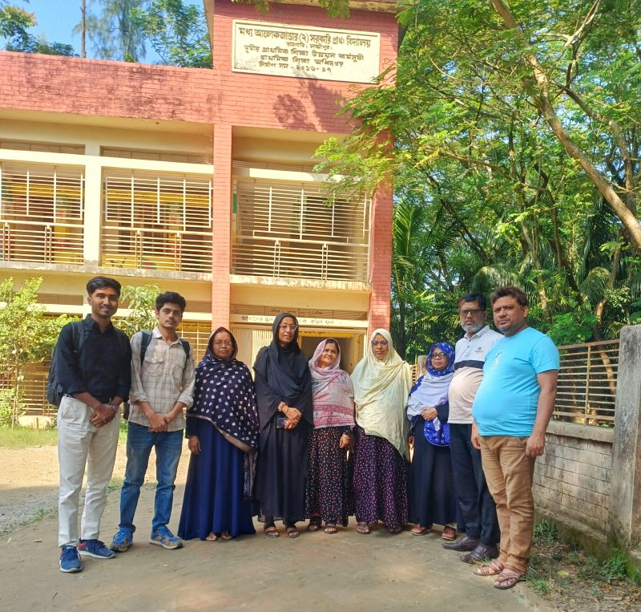
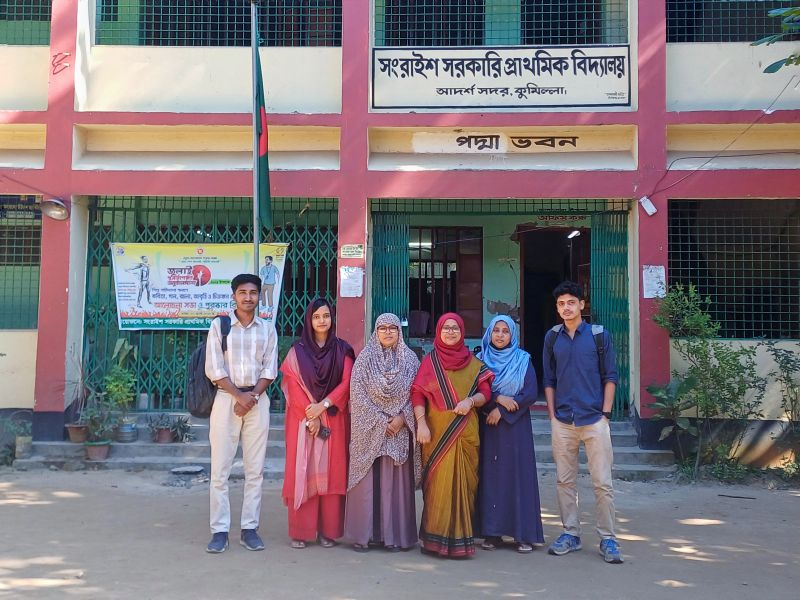

Data Enumerator (Project-Based)
Effectiveness study on the Continuous Professional Development (CPD) Program and training
Project overview
Fieldwork for the Continuous Professional Development (CPD) effectiveness study involved classroom observations, interviews with teachers and head teachers, and documentation of instructional practices in Ramgoti, Laxmipur and Cumilla Sadar. The work provided direct insight into how professional development is reflected in classroom teaching across different school contexts. One observation in Ramgoti was particularly instructive, demonstrating strong use of teaching aids, formative assessment, and active student participation despite relatively modest physical conditions. The experience reinforced the value of examining classroom practice directly rather than relying on assumptions based on location or infrastructure.

